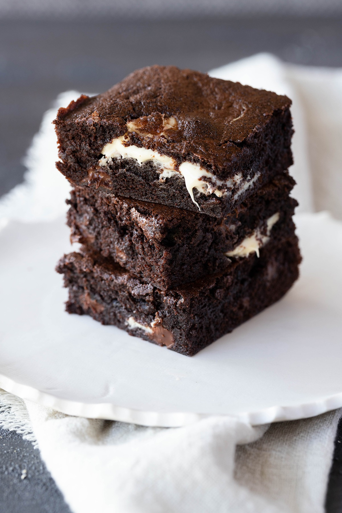

Fudgy Chocolate Chip Brownies

Description
This is an easy to make recipe for triple chocolate chip brownies using simple ingredients found in any supermarket.
These brownies are crunchy on top and deliciously soft in the middle!
Ingredients
- Sugar
- Cocoa Powder
- Flour
- Chocholate Chips
- Butter
- Eggs
- Vanilla
Steps
- Preheat the oven to 180C/350F.
- Grease a 20x20cm/8x8" rectangular or square baking tray with a little butter, then line with baking paper/parchment paper.
- Sift the dry ingredients into a large bowl and add in the chocolate chips.
- Melt the butter in a saucepan and add to the dry ingredients with the vanilla and eggs.
- Mix well until combined, then pour into your prepared tray.
- Bake for 25-30 minutes until brownies are crunchy on top and soft to the touch.